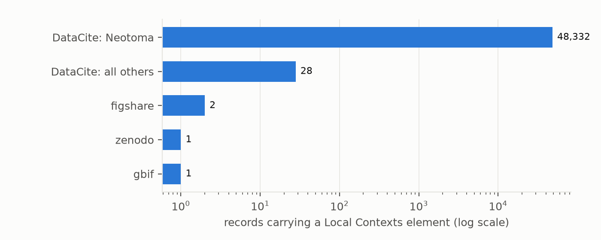
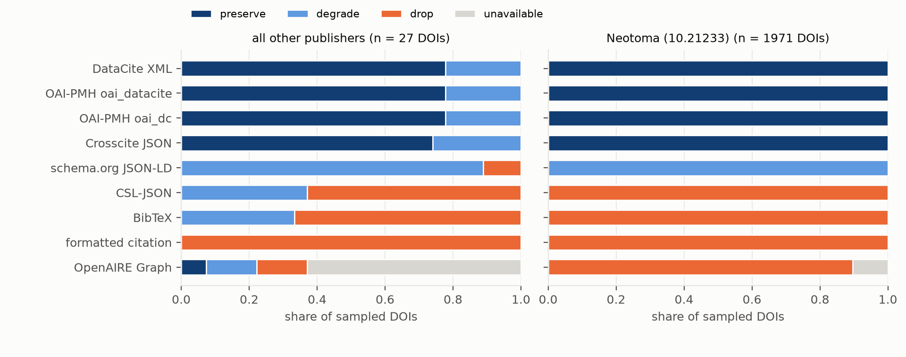

Verdict: Supported as preregistered, on both counts. Both results are one repository's, and H2 is set by the list of views.
- Community Labels are vanishingly rare (H1, Supported pooled).
- Of 48,362 records carrying any Local Contexts element, one carries a TK or BC Label (by name or URI) with a live Local Contexts Hub project: 0.002% (exact 95% CI 0.00005–0.012%), against a threshold of 0.1%.
- 99.94% of the records come from one repository, the Neotoma Paleoecology Database.
- Without Neotoma it is 1 of 30 records, which is Inconclusive by the same rule (3.3%, 0.08–17%).
- Two more DOIs (Moorea Biocode 1.0) carry a BC Label's template text, with a live Hub project where a community applied that Label, but not the Label's name. Counting them gives 3 of 48,362 (still Supported), and 3 of 30 without Neotoma (Refuted).
- Machine views drop the element (H2, Supported). Across 1,998 sampled DOIs and up to nine views each, the
element is dropped in 43.6% of record × view pairs, against a threshold of 40%.
- The crossing comes from the view list. Four of the nine preregistered views drop the element for almost every record, and only 7 distinct record patterns occur. Without any one of those four views, the share is 36.5–37.4% and H2 would be Refuted. Without any of the other five, it is 49%.
- Other publishers. For publishers other than Neotoma the share is 28.8% (24.0–33.6%).
- What a machine sees depends on the format and on the repository's order.
- Formats that carry the rights list. DataCite XML, both OAI-PMH formats and Crosscite JSON carry it in full.
- Citation formats (CSL-JSON, BibTeX) carry only the first rights entry. Neotoma lists its Creative Commons licence first, so the Notice is cut. Repositories that list the Local Contexts entry first keep it.
- Schema.org JSON-LD, the format search engines read, puts the Local Contexts URI in
license. - The formatted citation and the OpenAIRE Graph drop it.
- No view says anything was dropped (H2b). None of these formats has a field for such a warning, and none was found in the 17,762 views that returned a record.
These counts describe repository systems, not communities. At the Hub itself, 15 of the 17 live projects linked from these records carry Notices only. Labels are rare at the source too, so their rarity in DOI metadata may reflect design and newness rather than loss.
In plain terms
Indigenous communities now have a formal way to attach their own conditions to data about them: "Labels", applied through a system called Local Contexts. Institutions can also attach "Notices" saying that such conditions may apply. We asked two plumbing questions: - Do these marks show up in the open research-data layer? - Do they survive when a record is copied into the formats other systems read?
We searched nine platforms and found about 48,000 records carrying a Local Contexts mark. Almost all came from one paleoecology database, which puts the same institutional Notice on every record. Under our strict rule, only one record carried a community Label linked to a live Local Contexts project. Two more carried a Label's wording without its name. At the Local Contexts Hub itself, most projects linked from these records also carry Notices only.
We then followed 1,998 records through nine common formats: - The full metadata formats kept the mark. - Citation formats kept only the first rights statement. So the mark survived only when the repository listed it before the licence. - The search-engine format filed it as a licence. - One large research graph dropped it. - No format ever said that something had been left out.
The headline "more than 40% lost" depends on which formats are counted. Most of the loss is in citation and aggregator formats that carry little rights information of any kind.
This is about the pipes, not the communities.
What was asked
The lead (ancestral-tk-notice-machine-readability, Ancestral Futures) asked whether Indigenous-governance metadata
is present but not machine-readable downstream. Preregistered hypotheses (plan.md):
- H1: fewer than 0.1% of element-bearing records carry a community-authored TK/BC Label resolvable to a Hub
project.
- H2: the element is dropped in at least 40% of record × machine-view pairs.
- H2b: no lossy view signals the loss.
What was already known
| Work | What it established | What it left open |
|---|---|---|
| Local Contexts and the DataCite, Dryad, Dataverse and RAiD integrations (2022 onwards) | a vocabulary of 30 Labels and 12 Notices, and rights-field support in major schemas | no count of uptake across platforms |
| Dataverse GitHub issues #8129, #5920, #4176 | rights fields can be lost in the dc:rights / oai_dc crosswalk | no measurement across formats |
| CARE principles; Te Mana Raraunga | Indigenous data governance requires provenance and protocols to travel with data | no test of whether the machinery carries them |
How it was done
Census (limb 1). Nine platforms were queried through their public APIs for Local Contexts URIs and exact vocabulary names, and every raw response is saved. - DataCite. Structured rights fields and free text. After review, a supplementary pass added field-wildcard queries (descriptions, related and alternate identifiers, subjects, rights text, and the "Local Contexts" rights scheme), because DataCite's free-text index cannot see URIs (D5). It found one more record. - The other platforms: Zenodo, Dryad, Harvard Dataverse, figshare, OSF, GBIF, RAiD and re3data. - Name-only hits. All 69 records matched only by a vocabulary name in free text were adjudicated by hand. 2 were genuine. The rest were mostly empty figshare template fields (two universities have built Local Contexts fields into their templates) and texts about Local Contexts. - URIs. Every distinct Local Contexts URI was resolved, and every linked Hub project was read through the Hub's public API.
| platform | records returned | element-bearing | Label with live Hub | note |
|---|---|---|---|---|
| DataCite | 51,965 | 48,360 | 0 | free text cannot see URIs; field queries added (D5) |
| Zenodo | 697 | 1 | 0 | its public JSON omits custom rights entries that DataCite shows for the same DOIs |
| Dryad | 42 | 0 | 0 | |
| Harvard Dataverse | 196 | 0 | 0 | no Local Contexts metadata block installed: a structural zero |
| figshare | 2,267 | 2 | 1 | template fields; 2 of 65 filled |
| GBIF | 156 | 1 | 0 | machine-tag namespace not queried (unknown) |
| RAiD | 622 | 0 | 0 | no public RAiD exposes a TK label field |
| OSF | — | — | — | search unavailable (HTTP 503) |
| re3data | 0 | 0 | 0 | searches names and descriptions, not policies |
Platform counts are lower bounds. The Zenodo and GBIF hits duplicate DataCite DOIs and are counted once. Nearly all element-bearing records are datasets (48,336 of 48,362). The 30 non-Neotoma records date from 2023 onward, apart from three older DOIs.
Crosswalks (limb 2).
- The sample. All non-Neotoma element-bearing DataCite DOIs at the time, with Neotoma filling the sample to 2,000
(seed 20261021). Two DOIs later judged not genuine are excluded (D4); the DMPTool record found in D5 is not in the
sample.
- The nine views. Six DOI content-negotiation formats (DataCite XML, schema.org JSON-LD, Crosscite JSON,
CSL-JSON, BibTeX, formatted citation); DataCite OAI-PMH oai_dc and oai_datacite; and the OpenAIRE Graph record.
- Scoring:
- preserve: the URI or name is in a rights-type field, distinct from the licence;
- degrade: it appears only in the licence field, in free text, or in the citation formats' single copyright
field, which holds whatever rights entry came first;
- drop: it is absent;
- views that return nothing are excluded.
- Re-scoring after review. All bodies were re-scored with JSON-parsed rights fields, which corrected three calls
(D5).
Hand check. 100 record-views, stratified by view with each view's rare calls oversampled, were checked against the raw responses. All 100 scorer calls are right under the URI-or-name definition. The independent review re-scored 104 more and agreed on drop versus not-drop in every case.
Results
H1: how many records carry a community Label?
| records with any element | Label with a live Hub project | share (exact 95% CI) | verdict by the rule | |
|---|---|---|---|---|
| all platforms | 48,362 | 1 | 0.002% (0.00005–0.012%) | Supported |
| without Neotoma | 30 | 1 | 3.3% (0.08–17%) | Inconclusive |
| counting the two Biocode DOIs: all | 48,362 | 3 | 0.006% (0.0013–0.018%) | Supported |
| counting the two Biocode DOIs: without Neotoma | 30 | 3 | 10% (2.1–27%) | Refuted |
- The pooled verdict is Neotoma's. Neotoma's 48,332 records each carry the Open to Collaborate Notice URI, under the name of the TK Open to Collaboration Label (TK CB), and with no Hub project. That naming mismatch is why Label names appear in 48,333 records, while none of those carries a community-applied Label.
- The one counted record is a Victoria University of Wellington thesis record on figshare. It carries a BC Provenance Label and a live Hub project created by the community. The Label is the community's own statement and is not evaluated here. Its DOI, like the other VUW record's, is registered but absent from DataCite's public index.
- The other 29 non-Neotoma records:
- DataCite DOIs from the Gump South Pacific Research Station on Mo'orea (its publisher name appears in two forms), Tetiaroa Society on Tetiaroa, iPlaces, ADA Dataverse (three datasets from a community-led project), Landcare Research's NZ Arthropod Collection, Zenodo and a DMPTool plan;
- a second VUW figshare record.
- The Biocode records. The two Moorea Biocode 1.0 DOIs list, in their rights entries, a BC Label's template wording ("This Label is being used to verify that…") with identifiers "bc-consent" and "bc-label". The linked Hub project shows a BC Consent Verified Label applied by a community. They fail the preregistered rule only because neither the Label's name nor its URI appears.
- At the Hub. Of the 20 Hub projects linked from these records, 17 resolve and 3 return 404. 15 of the 17 carry Notices only, created by institutions or researchers. 2 carry a Label: the VUW project, created by a community, and the Biocode project, created by an institution, with a community-applied Label. The DOI layer's Notice-heavy picture mirrors the Hub for these projects.


Figure 1. Records carrying a Local Contexts element, by platform (log scale). Neotoma is shown separately from every other DataCite publisher.
H2: what survives the crosswalks?
H2, Supported. 7,746 of 17,762 record × view pairs drop the element: 43.6% (record-cluster bootstrap 95% CI 43.5–43.7%).
The interval is not the uncertainty that matters. Only 7 distinct per-record patterns occur across 1,998 DOIs. Every Neotoma record shows the same pattern: exactly 4 of the 9 views drop the element. The threshold is crossed because the preregistered list holds four such views.
| H2 variant | share dropped | verdict by the rule |
|---|---|---|
| as preregistered (9 views) | 43.6% | Supported |
| without BibTeX / CSL-JSON / formatted citation | 36.5% each | Refuted |
| without the OpenAIRE Graph | 37.4% | Refuted |
| without any one of the other five views | 49.1% | Supported |
| the six doi.org formats only | 49.8% | Supported |
| only views with a rights or licence field | 16.6% | Refuted |
| unavailable OpenAIRE records counted as drops | 44.3% | Supported |
| Neotoma (1,971 DOIs) | 43.8% | Supported |
| other publishers (27 DOIs) | 28.8% (24.0–33.6%) | Refuted |
| view | preserve | degrade | drop | unavailable |
|---|---|---|---|---|
| DataCite XML | 1,992 | 6 | 0 | 0 |
| OAI-PMH oai_datacite | 1,992 | 6 | 0 | 0 |
| OAI-PMH oai_dc | 1,992 | 6 | 0 | 0 |
| Crosscite JSON | 1,992 | 6 | 0 | 0 |
| schema.org JSON-LD | 0 | 1,995 | 3 | 0 |
| CSL-JSON | 0 | 12 | 1,986 | 0 |
| BibTeX | 0 | 11 | 1,987 | 0 |
| formatted citation | 0 | 0 | 1,998 | 0 |
| OpenAIRE Graph | 0 | 6 | 1,772 | 220 |
- DataCite's own formats keep it. DataCite XML, both OAI-PMH formats and Crosscite JSON carry the element wherever the repository put it in the rights list. Their 6 "degrade" calls are records whose repository put the notice in the description (4) or an alternate identifier (2); the crosswalk did not cause them.
oai_dcflattens it. It keeps the element as untypeddc:rightsstrings and loses the scheme ("Local Contexts") that tells a machine what it is.- The citation formats keep one rights entry. CSL-JSON and BibTeX carry a single
copyrightfield equal to the first rights entry, in every sampled DOI.- When the repository lists its licence first, as Neotoma does, the Notice is cut.
- All 17 sampled records that list the Local Contexts entry first carry it. In 6 of them the wording is one the detector cannot recognise as a Notice or Label, so they are scored as drops.
- We score those as "degrade" rather than "preserve", because
copyrightholds whatever came first rather than a typed rights entry.
- Schema.org JSON-LD lists the Local Contexts URI in
license, beside the Creative Commons licence. Only the URI's domain distinguishes a governance notice from a licence; the field asserts that both are licences. Scoring these as "degrade" rather than "drop" is the conservative choice: as drops, H2 would be 54.8%. - The OpenAIRE Graph drops it in 1,772 of the 1,778 records it holds; the other 6 carry it only in free text. 220 DOIs are not indexed there.
H2b. None of the formats has a field for a warning that rights were omitted, and none of the 17,762 views contains one.


Figure 2. Whether each machine view preserves, degrades or drops the element, by view, for sampled DOIs. Other publishers (left) and Neotoma (right).
What this does and does not show
- Uptake in the DOI layer is one institution's Notice. Community-applied Labels, the element designed to carry a community's own conditions, are almost absent: one record under a strict rule, three under a looser one. The Hub shows the same picture for the linked projects, which suggests newness and design rather than loss.
- Where the element is a proper rights entry, DataCite's own formats carry it faithfully. Downstream formats then
either flatten it (
oai_dc), file it as a licence (JSON-LD), keep it only if it is listed first (citation formats), or drop it (formatted citation, OpenAIRE). None says so. - H2's verdict is a statement about the preregistered view list. "More than 40% of pairs" holds because four of nine standard views drop the element. That is a fair description of the pipeline as listed, but not a property of the records.
- Not shown:
- whether any community wants more visibility;
- landing pages, or the Hub's own visibility;
- specific Label names in free text (name-only recall covers four generic names);
- GBIF machine tags under their own namespace;
- the Zenodo records whose rights entries its public JSON hides.
- Care note. No community's data was analysed, and no collection is judged. Engagement with Local Contexts, the repositories and Te Mana Raraunga / Pacific data-governance advisers is recommended before these counts are used to rank platforms.
Process and deviations
Preregistered in plan.md, with all code committed before the outputs it produces, with one exception noted in D5.
An independent adversarial review (review/review.md) recommended "fix first". Its corrections are D5. Deviations:
- D1: testing on neutral terms only; OSF unavailability recorded; the aggregator is OpenAIRE only; the H2 unit;
the care note.
- D2: the Zenodo page-size bug, fixed before the census was scanned.
- D3: RAiD cursor paging.
- D4: H2 excludes DOIs whose element was judged not genuine; the hand check.
- D5: review corrections:
- DataCite field queries;
- detector fixes;
- JSON-parsed scoring;
- the platform table;
- the view-set sensitivity;
- the alternative H1 count;
- the Hub cross-check;
- the D4 ordering restated.
Reproducing it
venv/bin/python code/census.py datacite datacite_fields zenodo dryad dataverse figshare gbif raid osf re3data
venv/bin/python code/census.py scan; venv/bin/python code/precision.py
venv/bin/python code/resolve_uris.py; venv/bin/python code/hub_check.py
venv/bin/python code/views.py; venv/bin/python code/rescore.py; venv/bin/python code/handcheck.py
venv/bin/python code/analysis.py; venv/bin/python code/figures.py
Released in results/tables/:
- primary.json;
- platforms.csv and hub_projects.csv;
- the census and view matrices, including by stratum;
- precision.csv, handcheck.csv and vocabulary.json.